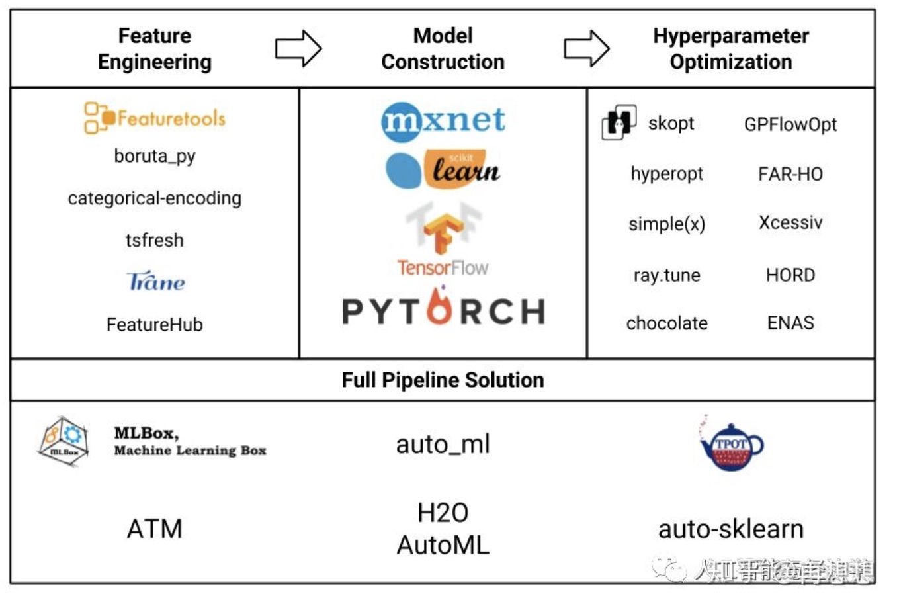

所属 Topic：机器学习 · 类型：方法
一.综述#
目前 AutoML主要分为三类：
- 自动参数调整（相对基本的类型）
- 非深度学习的自动机器学习(如：AutoSKlearn）。此类型主要应用于数据预处理，自动特征分析，自动特征检测，自动特征选择和自动模型选择等。
- 深度学习的自动机器学习(例如Auto-Keras)

二.常用自动化tool介绍#
streamlit#
https://docs.streamlit.io/en/stable/
streamlit的一个案例，有些相似
https://zhuanlan.zhihu.com/p/216832236
https://github.com/DheerajKumar97/Automated-ML-Application-for-EDA-Streamlit-Deployment--Heroku
pycaret#
自动化机器学习的python 库
https://github.com/pycaret/
这个其实和R的caret包应该是一样的
介绍 https://zhuanlan.zhihu.com/p/213360208
可以阅读下源码，应该有很多可以借鉴的
## https://github.com/pycaret/pycaret/tree/master/tutorials
from pycaret.classification import *
exp_clf101 = setup(data = data, target = label, session_id=123) ## 自动识别类别、数据清洗预处理
### 给出常用分类模型，10折交叉验证的结果，参数采用的grid_search
best_model = compare_models()
单独选择某一个
lgb = create_model('lightgbm')
ensemble_model()
tune_model()
plot_model(mode, plot=xxx) # xxx: pr, auc, parameter
# 封装的很不错
。。。。
但是我实验的时候发现一个问题，当数据比较多的时候超内存，应该是setup时候可以有选择的操作
Gradio#
比streamlit更轻量一些的，因为它推荐的应用场景都是对“单个函数”进行调用的应用，并且不需要对组件进行回调。
可以将自己做的简单app，分享成小程序
- github链接: https://github.com/gradio-app/gradio
- 有类似于shiny hub的host https://gradio.app/introducing-hosted，可以在上面运行自己的app
（1）使用
autoX#
https://github.com/4paradigm/AutoX
三、usefull分析工具#
(1) MLFLOW#
Databricks推出的mlflow
偏向于算法模型的tracking管理、model管理
(2) pandas-profiling 对数据分布统计#
https://github.com/pandas-profiling/pandas-profiling
对dataframe数据的基本统计，包括 分布，基本统计量，绘图，相关系数之类的完整report
import pandas_profiling
pandas_profiling.ProfileReport(data)
pfr.to_file('report.html')
(3)kubeflow#
https://www.kubeflow.org/docs/pipelines/overview/pipelines-overview/
hopsml#
https://github.com/logicalclocks/hopsworks
https://hopsworks.readthedocs.io/en/1.1/hopsml/index.html
Featuretools#
自动化特征工程